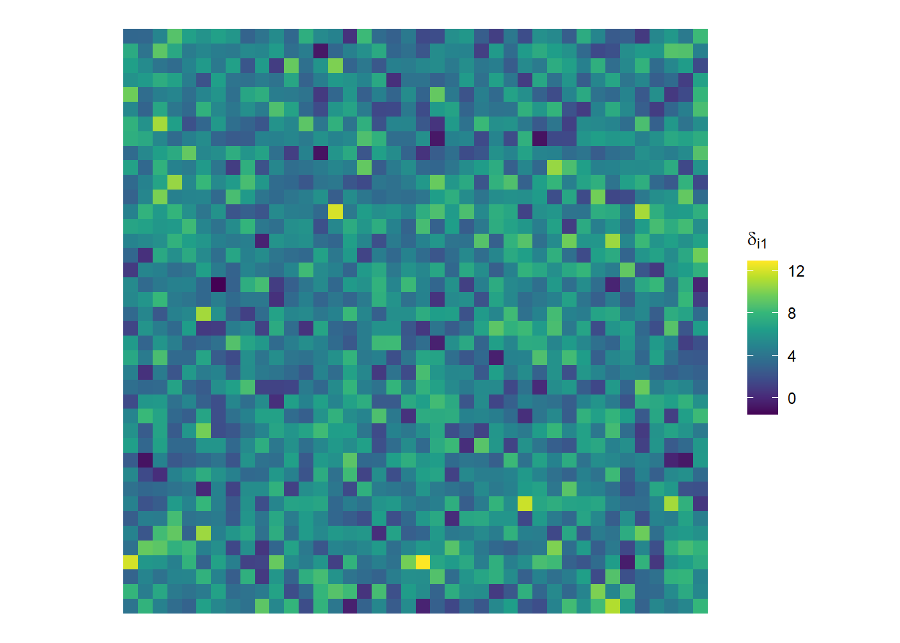

Code: Load the packages
library(tidyverse)
library(igraph)
library(viridis)
library(matrixsampling)March 23, 2023
In the previous post we derived the full conditionals for the MCAR model. Here we will implement the MCMC in R. First, we will summarize the results of the previous step.
Notation: 1) Let \(\mathcal{D}\) be a spatial domain partioned into \(n\) areal units. Index these units by \(I = \{1,2,\dots,n\}\) 2) Let \(\boldsymbol\delta_i\) is a \(p \times 1\) response vector at areal unit \(i\). 3) Let \(\mathbf{z}_i\) be a \(q \times 1\) vector of covariates at location \(i\), including an intercept. (\(z_{i1} = 1\)). 4) Let \(\boldsymbol\beta\) be a \(qp \times 1\) vector of fixed effects associated with the covariates in \(z_i\). 5) Let \(\boldsymbol\phi_i\) be a \(p times 1\) random effect vector used to explain the spatial correlation.
Frequently it will be useful to work with these vectors stacked in matrices and sometimes the vectorized version of those matrices. The general convention we will use will be to stack vectors into a matrix row-by-row.
For example, we define a matrix \(\mathbf{Z}\) which will contain the covariate information. \[ \mathbf{Z} = \begin{pmatrix} \mathbf{z}_1^T \\ \mathbf{z}_2^T \\ \vdots\\ \mathbf{z}_n^T\\ \end{pmatrix} = \begin{pmatrix} 1 & z_{12} & \dots & z_{1q}\\ 1 & z_{22} & \dots & z_{2q}\\ \vdots & \vdots & \ddots & \vdots\\ 1 & z_{n2} & \dots & z_{nq}\\ \end{pmatrix} \]
Further, define a matrix \(\boldsymbol\Delta\) which will contain the response vectors. \[ \boldsymbol\Delta = \begin{pmatrix} \boldsymbol\delta_1^T \\ \boldsymbol\delta_2^T \\ \vdots\\ \boldsymbol\delta_n^T\\ \end{pmatrix} = \begin{pmatrix} \delta_{11} & \delta_{12} & \dots & \delta_{1p}\\ \delta_{21} & \delta_{22} & \dots & \delta_{2p}\\ \vdots & \vdots & \ddots & \vdots\\ \delta_{n1} & \delta_{n2} & \dots & \delta_{np}\\ \end{pmatrix} \]
Finally, define a matrix \(\boldsymbol\Phi\) which will contain the spatial random effect vectors.
\[ \boldsymbol\Phi = \begin{pmatrix} \boldsymbol\phi_1^T \\ \boldsymbol\phi_2^T \\ \vdots\\ \boldsymbol\phi_n^T\\ \end{pmatrix} = \begin{pmatrix} \phi_{11} & \phi_{12} & \dots & \phi_{1p}\\ \phi_{21} & \phi_{22} & \dots & \phi_{2p}\\ \vdots & \vdots & \ddots & \vdots\\ \phi_{n1} & \phi_{n2} & \dots & \phi_{np}\\ \end{pmatrix} \]
Frequently we will work with vectorizations of these matrices. An bold lowercase symbol without index will represent the vectorization (by column) of the corresponding matrix, i.e. \(\boldsymbol\phi = \text{vec}(\boldsymbol\Phi)\). Vectorization of the transpose of the corresponding matrix will be indicated with a “prime”, \('\), i.e. \(\boldsymbol\phi' = \text{vec}(\boldsymbol\Phi^T)\)
Breaking from the row-by-row convention, we will arrange fixed effects vectors in a matrix column-by-column \[ \mathbf{B} = \begin{pmatrix} \boldsymbol\beta_1 & \boldsymbol\beta_2 & \dots & \boldsymbol\beta_q \\ \end{pmatrix} = \begin{pmatrix} \beta_{11} & \beta_{21} & \dots & \beta_{q1}\\ \beta_{12} & \beta_{22} & \dots & \beta_{q2}\\ \vdots & \vdots & \ddots & \vdots\\ \beta_{1p} & \phi_{2p} & \dots & \beta_{qp}\\ \end{pmatrix} \] I might consider changing this one.
The model specification is as follows \[ \begin{align*} \boldsymbol\delta_i &\sim \text{Normal}_{p}\left(\boldsymbol{\mathcal{Z}}_i\boldsymbol\beta + \boldsymbol\phi_i, \, \boldsymbol\Omega\right)\\ \boldsymbol\beta &\sim \text{Normal}_{qp}(\boldsymbol\mu, \, \boldsymbol\Gamma)\\ \boldsymbol\phi_i|\boldsymbol\phi_{j\ne i},\boldsymbol\Lambda &\sim \text{Normal}_p\left(\rho\sum_{i \sim j}\mathbf{C}_{ij}\boldsymbol\phi_j, \, w^{-1}_{i+}\boldsymbol\Lambda\right)\\ \boldsymbol\Omega &\sim \text{InvWish}(\psi,\mathbf{G})\\ \boldsymbol\Lambda &\sim \text{InvWish}(\nu, \mathbf{R})\\ \rho &\sim \text{Unif}(0, \,1) \end{align*} \] The full conditionals for this model are derived in the previous post. They are \[ \begin{align*} \boldsymbol\beta \,|\, \text{rest} &\sim \text{Normal}_{qp}\left(\mathbf{V}_{\beta}^{-1}\mathbf{M}_{\beta}, \mathbf{V}_{\beta}^{-1}\right)\\ \mathbf{V}_\beta &= \mathbf{Z}^T\mathbf{Z}\boldsymbol\Omega^{-1} + \boldsymbol\Gamma^{-1}\\ \mathbf{M}_\beta &= \left(\mathbf{Z}^T \otimes \boldsymbol\Omega^{-1}\right)\left(\boldsymbol\delta' - \boldsymbol\phi' \right) + \boldsymbol\Gamma^{-1}\boldsymbol\mu\\ \\ \boldsymbol\phi_i \,|\, \text{rest} &\sim \text{Normal}_{p}\left(\mathbf{V}_{\phi_i}^{-1}\mathbf{M}_{\phi_i}, \mathbf{V}_{\phi_i}^{-1}\right)\\ \mathbf{V}_{\phi_i} &= \boldsymbol\Omega^{-1} + w_{i+}\boldsymbol\Lambda^{-1}\\ \mathbf{M}_{\phi_i} &= \boldsymbol\Omega^{-1}(\boldsymbol\delta_i - \mathbf{B}\mathbf{z_i}) + \rho\boldsymbol\Lambda^{-1}\boldsymbol\Phi^T\mathbf{w}_i\\ \\ \boldsymbol\Omega \,|\, \text{rest} &\sim \text{InvWish}\left(n + \xi, \mathbf{H} + \mathbf{G}\right)\\ n &= \text{number of areal units}\\ \mathbf{H} &= \sum_{i=1}^n \left[\boldsymbol\delta_i - (\mathbf{B}\mathbf{z_i} + \boldsymbol\phi_i)\right]\left[\boldsymbol\delta_i - (\mathbf{B}\mathbf{z_i} + \boldsymbol\phi_i)\right]^T\\ \\ \boldsymbol\Lambda \,|\, \text{rest} &\sim \text{InvWish}\left(n + \nu, \mathbf{R} + \mathbf{S}\right)\\ n &= \text{number of areal units}\\ \mathbf{S} &= \boldsymbol\Phi^T\left(\mathbf{D}-\rho\mathbf{W}\right)\boldsymbol\Phi \end{align*} \]
First, we need to simulate some data.
First, define and partition the spatial domain.
Next, sample from the prior distribution for the fixed effects. Also sample values for the covariates.
Next, sample the spatial random vectors
Next, sample the multivariate response.
Plot the simulated data.

Now for the MCMC.
# set-up
niter <- 100
keep_B <- array(NA, dim(p, q, niter))
keep_Omega <- array(NA, dim(p, p, niter))
keep_Lambda <- array(NA, dim(p, p, niter))
keep_Phi <- array(NA, dim(n, p, niter))
keep_rho <- rep(NA, niter)
# initial values
beta <- matrix(rep(0, q*p), ncol = 1)
B <- matrix(c(beta), nrow = p)
Omega <- diag(p)
Lambda <- diag(p)
Phi <- matrix(0, nrow = n, ncol = p)
keep_B[,,1] <- B
keep_Omega[,,1] <- Omega
keep_Lambda[,,1] <- Lambda
keep_Phi[,,1] <- Phi
# prior parameters
mu <- rep(0, q*p)
Gamma <- 10000*diag(p)
Gamma_inv <- solve(Gamma)
G <-
R <-
nu <-
xi <-
# pre-computes
ZtZ <- t(Z)%*%Z
Gamma_inv_mu <- solve(Gamma)%*%mutic()
for (iter in 1:niter){
# sample beta
M <- kronecker(t(Z), Omega_inv)%*%(c(t(Delta)) - c(t(Phi)))
V_inv <- solve(ZtZ%*%Omega_inv + Gamma_inv)
beta <- V_inv%*%M + t(chol(V_inv))%*%rnorm(q*p)
B <- matrix(c(beta), nrow = p)
# sample phi
for (i in 1:n){
M <- Omega_inv%*%(Delta[i,] - B%*%Z[i,]) + rho*Lambda_inv%*%t(Phi)%*%W[i,]
V_inv <- solve(Omega_inv + D[i,i]*Lambda_inv)
Phi[i,] <- V_inv%*%M + t(chol(V_inv))%*%rnorm(p)
}
# sample Omega
H <-
Omega <- rinvwishart(1, n + nu, G + H)
# sample Lambda
S <- t(Phi)%*%(D - rho*W)%*%Phi
Lambda <- rinvwishart(1, n + xi, R + S)
# sample rho
# TODO
# tune rho sampler
# TODO
# store results
}
toc()